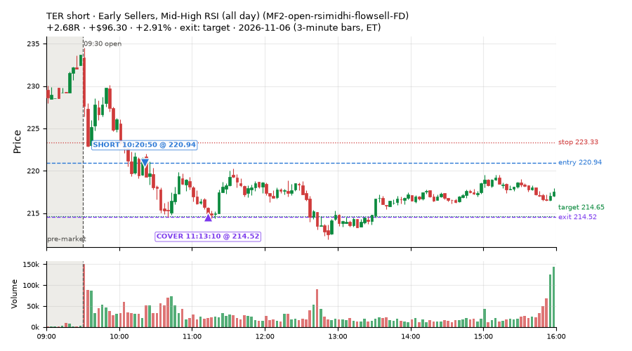
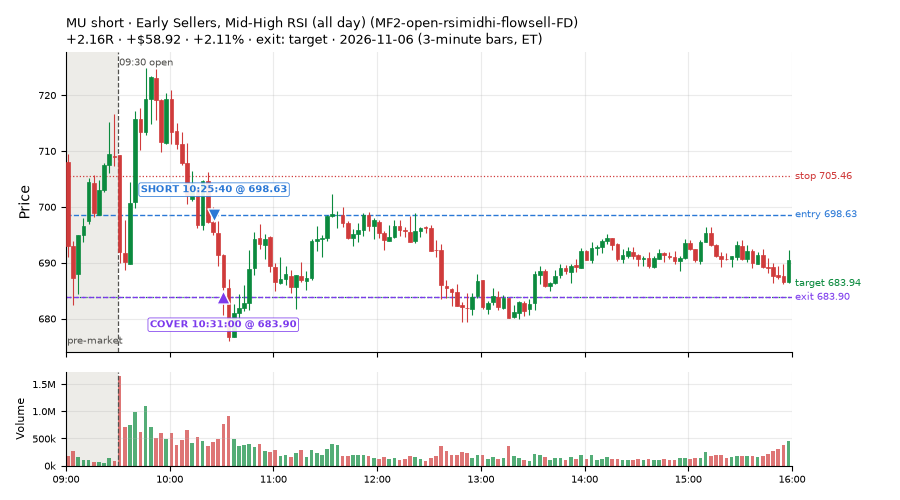
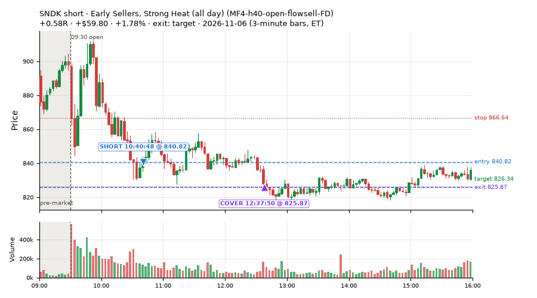
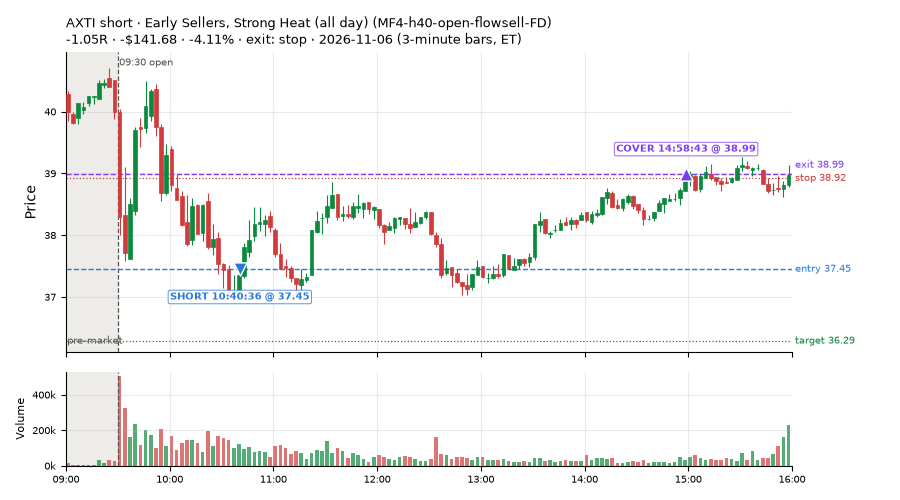
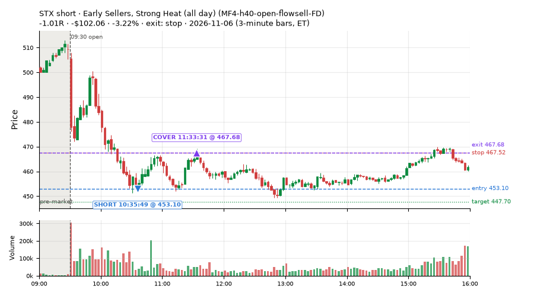
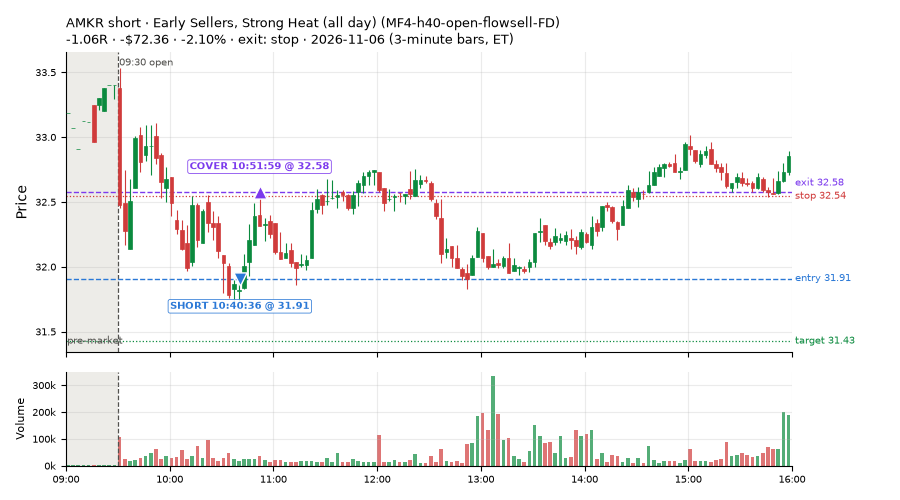
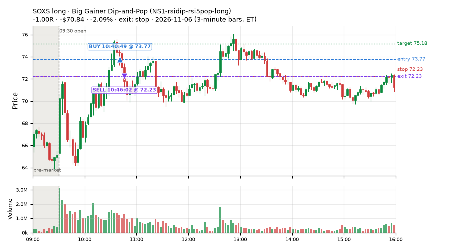
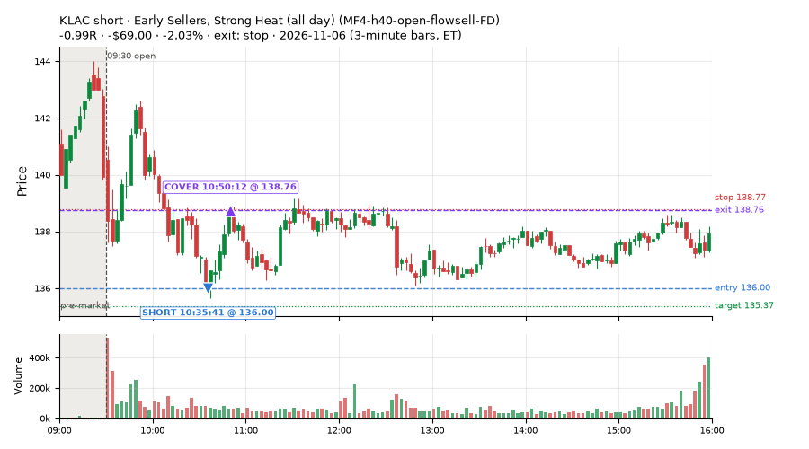

52 trades · win rate 33% · P/L $-1,057.07
PROBATION: no live setup has passed both locked test periods. 10 owner-directed setups added 2026-10-08 (MarcoFlow top 5 + 5 new), untested live. RW6G1 (RW6 + VWAP band guard) added 2026-10-09, probation.

| Symbol | Setup | Side | In | Out | Entry | Exit | Exit reason | % gained | P/L |
|---|---|---|---|---|---|---|---|---|---|
| TER | Early Sellers, Mid-High RSI (all day) (MF2-open-rsimidhi-flowsell-FD) | short | 10:20 | 11:13 | 220.94 | 214.52 | target | +2.91% | $96.30 |
| MU | Early Sellers, Mid-High RSI (all day) (MF2-open-rsimidhi-flowsell-FD) | short | 10:25 | 10:31 | 698.63 | 683.90 | target | +2.11% | $58.92 |
| SNDK | Early Sellers, Strong Heat (all day) (MF4-h40-open-flowsell-FD) | short | 10:40 | 12:37 | 840.82 | 825.87 | target | +1.78% | $59.80 |
| Symbol | Setup | Side | In | Out | Entry | Exit | Exit reason | % lost | P/L |
|---|---|---|---|---|---|---|---|---|---|
| AXTI | MF4-h40-open-flowsell-FD | short | 10:40 | 14:58 | 37.45 | 38.99 | stop | -4.11% | $-141.68 |
| STX | MF4-h40-open-flowsell-FD | short | 10:35 | 11:33 | 453.10 | 467.68 | stop | -3.22% | $-102.06 |
| AMKR | MF4-h40-open-flowsell-FD | short | 10:40 | 10:51 | 31.91 | 32.58 | stop | -2.10% | $-72.36 |
| SOXS | NS1-rsidip-rsi5pop-long | long | 10:40 | 10:46 | 73.77 | 72.23 | stop | -2.09% | $-70.84 |
| KLAC | MF4-h40-open-flowsell-FD | short | 10:35 | 10:50 | 136.00 | 138.76 | stop | -2.03% | $-69.00 |








Signal to fill: median 2s, 90th percentile 4s (52 trades). Bars close each minute; the order follows the bar close.
Best excursion (MFE): median 0.53R; worst (MAE) median 1.02R. 25% of trades never got +0.25R in our favour; 4 reached +1R and still closed at or below 0.
| Symbol | Setup | Best R | Worst R | Closed R |
|---|---|---|---|---|
| PANW | MF2-open-rsimidhi-flowsell-FD | +1.86 | -1.42 | -1.13 |
| AVGO | MF2-open-rsimidhi-flowsell-FD | +1.58 | -1.23 | -1.08 |
| CRDO | MF2-open-rsimidhi-flowsell-FD | +1.24 | -1.29 | -1.06 |
| MLI | MF2-open-rsimidhi-flowsell-FD | +1.09 | -0.99 | -1.09 |
| IYW | MF2-open-rsimidhi-flowsell-FD | +0.76 | -1.57 | -1.38 |
| Entry time | Trades | Win | Avg R | P/L |
|---|---|---|---|---|
| 09:50-10:30 | 10 | 90% | +0.69 | $185.23 |
| 10:30-11:30 | 42 | 19% | -0.72 | $-1,242.30 |
| Setup | Trades | Win | Avg R | Adj R (net of SPY) | Avg R ex-market (all sessions) | P/L |
|---|---|---|---|---|---|---|
| Gap-Down Recovery Fade (all day) (L3-gap-slope-fromopen-FD) | 1.0 | 100% | +1.20 | +0.78 | -0.20 (beta -1.25, n 35) | $26.98 |
| Early Sellers, Mid-High RSI (all day) (MF2-open-rsimidhi-flowsell-FD) | 28.0 | 14% | -0.74 | -0.59 | -0.17 (beta -2.85, n 101) | $-619.26 |
| Early Sellers, Strong Heat (all day) (MF4-h40-open-flowsell-FD) | 14.0 | 36% | -0.38 | -0.45 | -0.24 (beta -1.43, n 89) | $-445.34 |
| Big Gainer Dip-and-Pop (NS1-rsidip-rsi5pop-long) owner-directed; holdouts once: Sep-Oct +0.326R n10, Apr-Jun +0.056R n119 | 4.0 | 75% | -0.07 | -0.22 | -0.02 (beta +0.33, n 18) | $-48.38 |
| Gap-Down Pop Fade, Heavy Selling (all day) (RW3-gapdn-rsi5pop-flowsell-short-FD) | 4.0 | 75% | +0.39 | -0.23 | +0.21 (beta -1.16, n 83) | $15.90 |
| Gap-Down Pop Fade (all day) (RW5-heat30-flowsell-rsi5pop-gapdn-short-FD) | 1.0 | 100% | +0.49 | -0.46 | +0.23 (beta -0.83, n 96) | $13.03 |
Market direction (SPY, beta 1) accounted for $-9.22 of today's $-1,057.07; the rest ($-1,047.85) came from the setups themselves. Avg R net of SPY: -0.46 (incl. a hedge leg's cost; report only).
10 setups live today. Today: 471 signals, 52 taken, 14 lost because another setup held the symbol (3%). Since 2026-10-06 (24 sessions): 2926 signals, 969 taken, 125 lost to other setups (4%). Peak open positions today 40 of 77 slots. Earnings blackout removed 1530 symbols before scanning.
Simulated playing time (not live): 1940 what-if trades of signals not taken, avg -0.07R, 53% winners; of them 125 lost to another setup (avg -0.10R).
Silent: intraday_momentum · Crowded out: MF4-h40-open-flowsell, MF3-open-flowsell-rsi5hi, MF5-flowsell-vwapup-rsi5hi · Starved: MF2-open-rsimidhi-flowsell
| Prio | Setup | Today sig / taken | Sessions | Signals / taken / trades | Taken/day | Expected/day | Lost to other setups | Lost to (setup n) | Top skip reasons | SIMULATED: not-taken n / avg R / win | Verdict |
|---|---|---|---|---|---|---|---|---|---|---|---|
| 1 | Gap-Down Pop Fade (all day) RW5-heat30-flowsell-rsi5pop-gapdn-short-FD | 8 / 1 | 16 | 132 / 96 / 96 | 6.00 | 12.79 | 0 | – | spread / quote / size 17, not shortable / shorts off 11, daily loss cap 8 | 36 / -0.03R / 53% | ok 30.0 entries/week |
| 2 | Gap-Down Pop Fade, Heavy Selling (all day) RW3-gapdn-rsi5pop-flowsell-short-FD | 16 / 4 | 16 | 151 / 83 / 83 | 5.19 | 13.59 | 1 | CWT14-failbrk-pdl-p10-lowvol-long 1 | daily loss cap 23, not shortable / shorts off 22, spread / quote / size 22 | 68 / +0.20R / 62% | ok 25.9 entries/week |
| 3 | Early Sellers, Mid-High RSI (all day) MF2-open-rsimidhi-flowsell-FD | 57 / 28 | 14 | 211 / 101 / 101 | 7.21 | 10.09 | 4 | RW5-heat30-flowsell-rsi5pop-gapdn-short-FD 4, RW3-gapdn-rsi5pop-flowsell-short-FD 4, MF2-open-rsimidhi-flowsell-FD 4 | spread / quote / size 55, not shortable / shorts off 27, daily loss cap 24 | 110 / -0.32R / 28% | ok 36.1 entries/week |
| 4 | Early Sellers, Strong Heat (all day) MF4-h40-open-flowsell-FD | 25 / 14 | 14 | 219 / 89 / 89 | 6.36 | 16.45 | 4 | RW5-heat30-flowsell-rsi5pop-gapdn-short-FD 4, RW3-gapdn-rsi5pop-flowsell-short-FD 4, MF2-open-rsimidhi-flowsell-FD 3 | not shortable / shorts off 54, daily loss cap 38, spread / quote / size 34 | 129 / -0.08R / 61% | ok 31.8 entries/week |
| 5 | RSI Collapse Dip Buy (all day) ST7-rsi50dn-long-pm-t1s1-FD | 2 / 0 | 10 | 37 / 21 / 21 | 2.10 | 2.17 | 0 | – | spread / quote / size 14, daily loss cap 2 | 16 / +0.05R / 56% | slow 10.5 entries/week; ~6 weeks to 60 trades |
| 6 | Gap-Down Rebound Overbought Short (all day) L3-gap-slope-rsi5hi-FD | 43 / 0 | 6 | 330 / 14 / 14 | 2.33 | – | 2 | L3-gap-slope-fromopen-FD 2 | not shortable / shorts off 254, daily loss cap 41, spread / quote / size 19 | 304 / +0.02R / 72% | slow 11.7 entries/week; ~5 weeks to 60 trades |
| 7 | Gap-Down Recovery Fade (all day) L3-gap-slope-fromopen-FD | 286 / 1 | 8 | 947 / 35 / 35 | 4.38 | – | 14 | L3-gap-slope-fromopen-FD 14, L3-gap-slope-rsi5hi-FD 1 | not shortable / shorts off 798, daily loss cap 77, spread / quote / size 22 | 910 / -0.09R / 49% | ok 21.9 entries/week |
| 8 | Big Gainer Dip-and-Pop NS1-rsidip-rsi5pop-long | 5 / 4 | 22 | 23 / 18 / 18 | 0.82 | 0.92 | 0 | – | spread / quote / size 5 | 5 / +0.38R / 100% | slow 4.1 entries/week; ~15 weeks to 60 trades |
| 9 | Big Loser Flush Buy NS5-sma50-flush-oversold-long | 9 / 0 | 22 | 44 / 27 / 27 | 1.23 | 2.41 | 0 | – | daily loss cap 13, spread / quote / size 4 | 17 / +0.04R / 53% | slow 6.1 entries/week; ~10 weeks to 60 trades |
| 10 | Early Sellers, Strong Heat MF4-h40-open-flowsell | 20 / 0 | 22 | 115 / 21 / 21 | 0.95 | 7.24 | 51 | MF4-h40-open-flowsell-FD 46, MF2-open-rsimidhi-flowsell-FD 9, MF3-open-flowsell-rsi5hi-FD 4 | symbol held by another setup 51, spread / quote / size 24, not shortable / shorts off 18 | 94 / -0.11R / 60% | crowded-out 51 of 115 signals (44%) lost to setups already holding the symbol |
Every trade is attached as a CSV you can open and edit in Excel or Google Sheets. Live page: https://misiti15.github.io/MCF/live/